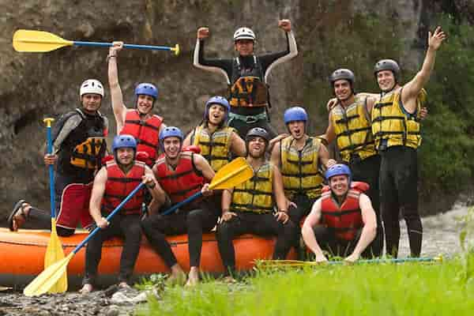
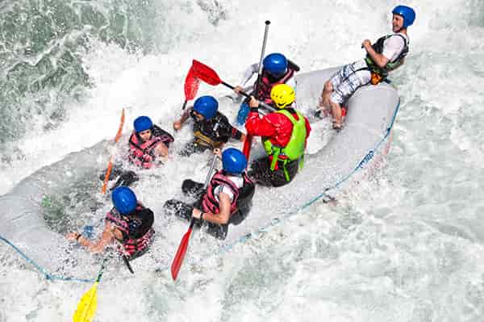
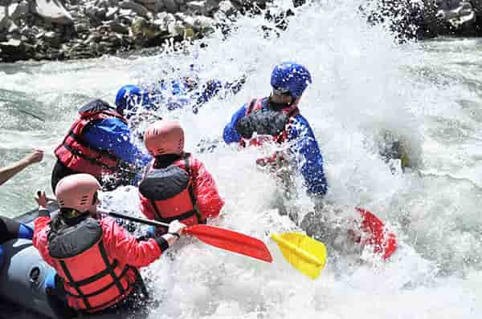

Our Rafting Trips
Half Day Adventure

Our Half Day Adventure is perfect for families and beginners who want to experience river rafting. This trip offers beautiful river views and rapids while providing a fun experience for everyone.
Wild Rapids Adventure

Our Wild Rapids Adventure is a great choice for people looking for more excitement on the river. This trip includes faster moving water and challenging rapids. It is a fun adventure for those who have some rafting experience.
Devil's Canyon Adventure

Our Devil's Canyon Adventure is designed for experienced rafters looking for a challenge. This trip includes exciting rapids and beautiful canyon scenery. It is a great choice for those wanting a more adventurous rafting experience.
Compare Our Rafting Trips
| Trip | Duration | Difficulty |
|---|---|---|
| Half Day Adventure | Half Day | Beginner |
| Wild Rapids Adventure | Full Day | Intermediate |
| Devil's Canyon Adventure | Full Day | Advanced |
Ready for Your Next Adventure?
Contact us to learn more about our rafting trips or to make a reservation.
Contact Us